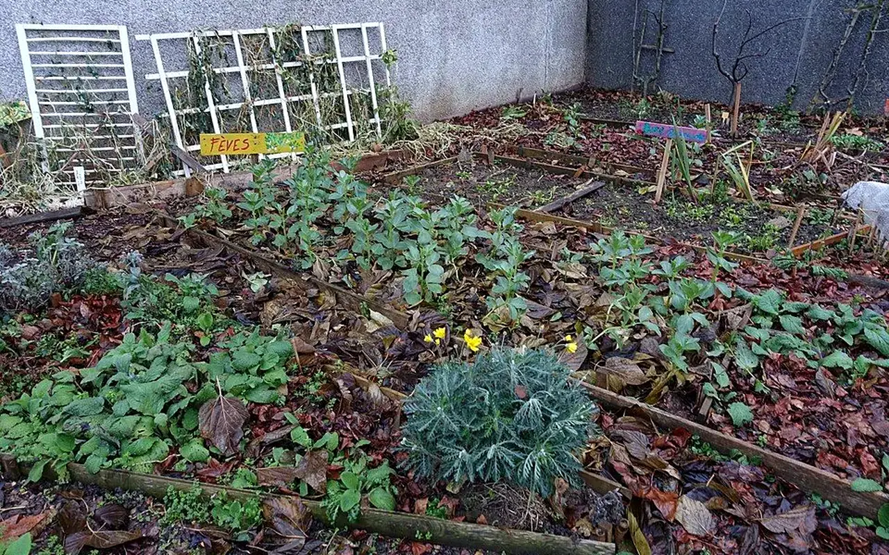

Dossier public
Espace bénévoles
Structurer les futures missions, chantiers, événements, formations et documents utiles aux personnes engagées.

Missions disponibles
Repérage, accueil, logistique, communication, cartographie ou appui administratif selon les besoins futurs.
À publierChantiers participatifs
Sessions encadrées à proposer uniquement lorsque les lieux, assurances et référents seront prêts.
En préparationÉvénements
Réunions locales, visites, ateliers et temps de mobilisation.
Structure prévueFormations
Modules futurs sur le réemploi, le signalement, l'accueil bénévole et les règles de sécurité.
À construireDocumentation
Guides internes, fiches pratiques et ressources terrain.
Voir les ressourcesCompte bénévole
Prévu pour un futur suivi des disponibilités et participations via Supabase.
Futur espace connectéManifester son intérêt
Une mission bénévole doit être utile, encadrée et sûre
TVF doit éviter de mobiliser des bénévoles sur des missions floues ou insuffisamment sécurisées. Chaque engagement terrain doit être préparé par une fiche mission ou une charte précisant le rôle attendu, le référent, les conditions d'intervention et les limites de responsabilité.
| Élément | Modalité à prévoir | Effet recherché |
|---|---|---|
| Mission | Repérage, inventaire, accueil, logistique, communication, atelier ou chantier encadré. | Donner une tâche claire et mesurable. |
| Référent | Nom du responsable local, consignes, horaires et canal de contact. | Ne jamais laisser une personne seule face à une décision de sécurité. |
| Sécurité | Équipements, accès autorisés, gestes interdits, niveau de compétence requis. | Protéger les bénévoles et les tiers. |
| Assurance | Vérification du cadre associatif applicable avant toute mission terrain. | Clarifier les responsabilités avant l'action. |
| Données et images | Photos, témoignages, coordonnées et droit à l'image uniquement avec accord. | Respecter les personnes et la confidentialité. |
| Fin de mission | Bilan, retour d'expérience, restitution du matériel et possibilité d'arrêter. | Garder un engagement libre, sérieux et durable. |
Un engagement utile, progressif et encadré
TVF doit permettre à chacun de contribuer sans devoir être expert du bâtiment. Les missions seront ouvertes selon les besoins réels, l'encadrement disponible, la sécurité des lieux et la capacité de suivi de l'association.
1. Intérêt
La personne indique son territoire, ses disponibilités, ses compétences et les sujets qui l'intéressent.
2. Qualification
TVF identifie les missions compatibles : observation, accueil, inventaire, logistique, communication, ateliers ou appui administratif.
3. Cadre
La mission précise le responsable, le lieu, la durée, les consignes, les limites et les documents utiles.
4. Action
Le bénévole agit dans un cadre validé, sans intervenir sur des tâches dangereuses ou professionnelles non encadrées.
5. Retour
TVF collecte les observations, les heures, les besoins et les améliorations pour renforcer la mission suivante.
Contribuer au terrain sans prendre de risque inutile
Repérage citoyen
Documenter une situation visible depuis l'espace public, sans intrusion et sans publication automatique d'adresse sensible.
Inventaire de ressources
Aider à photographier, décrire, classer et préparer les informations sur des matériaux ou équipements réutilisables.
Ateliers de valorisation
Participer à des temps encadrés : tri, nettoyage simple, étiquetage, préparation logistique ou sensibilisation au réemploi.
Médiation locale
Accueillir des habitants, expliquer la démarché, recueillir des besoins et orienter vers les bons formulaires ou interlocuteurs.
Appui administratif
Contribuer à la documentation, aux comptes rendus, aux fiches projets, aux sources et au suivi des demandes.
Communication sobre
Valoriser les actions confirmées avec des textes, photos et témoignages autorisés, sans annoncer de résultats non mesurés.
Sécurité : un bénévole ne doit pas entrer dans un bâtiment dangereux, manipuler des matériaux à risque ou réaliser des travaux techniques sans encadrement compétent, assurance et autorisations.
Rejoindre les futurs bénévolesDes missions concrètes, utiles et adaptées au temps disponible
L'espace bénévoles doit aider chacun à comprendre où il peut contribuer sans se surexposer : signalement, cartographie, inventaire de matériaux, appui logistique, accueil d'événement, documentation, communication locale ou soutien à une antenne en création.
1. Se présenter
Indiquer disponibilités, territoire, compétences et contraintes.
2. Être orienté
Recevoir une mission compatible avec le niveau d'encadrement disponible.
3. Agir
Contribuer à une action documentée, sans intervenir sur des tâches dangereuses.
4. Tracer
Documenter le temps donné, les besoins observés et les suites possibles.
Important : les missions bénévoles seront ouvertes progressivement selon les besoins réels, les assurances, l'encadrement et les projets validés.
FAQ
Questions fréquentes
Espace bénévoles explique comment encadrer l'engagement citoyen, les chantiers solidaires et les parcours d'insertion.
Un chantier participatif est-il ouvert à tous ?
Pour Espace bénévoles, les missions doivent être adaptées aux compétences, encadrées et sécurisées ; les gestes techniques restent confiés à des professionnels qualifiés.
Comment l'insertion est-elle envisagée ?
Dans Espace bénévoles, l'insertion passe par des parcours progressifs : découverte des métiers, ateliers pratiques, logistique, médiation, animation locale et orientation.
Que peut apporter un bénévole ?
Sur Espace bénévoles, un bénévole peut aider au repérage, à la documentation, à l'animation, à la logistique ou à la mobilisation locale.